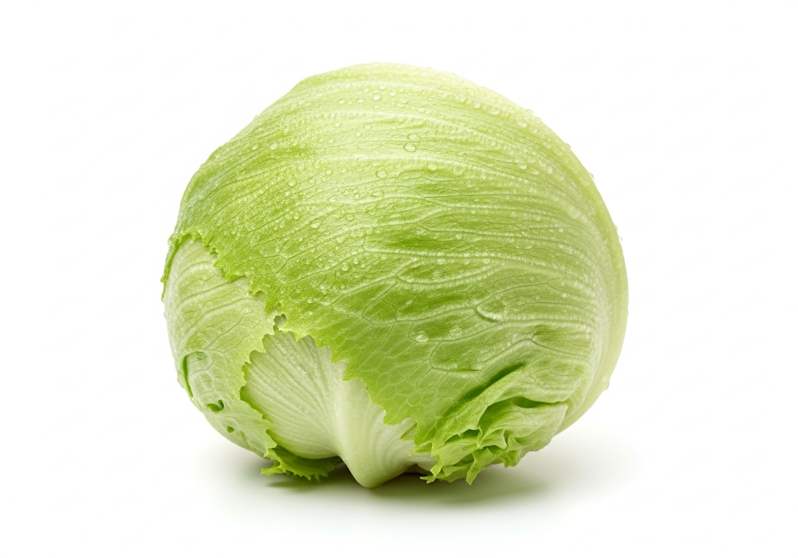

Sobre o projeto
Um projeto escolar que criou e mantém uma horta comunitária na escola. Aqui você encontra espécies plantadas, cuidados e registros de colheitas.
Plantas e hortaliças

Alface
Salsinha
Cenoura
Rúcula
Ervas aromáticas
Abóbora
Atividades realizadas
- Preparo do solo e composto orgânico
- Semeadura e transplante de mudas
- Rega, capina e controle manual de pragas
- Registro dos avanços no diário de bordo
- Oficinas culinárias e gestão da colheita